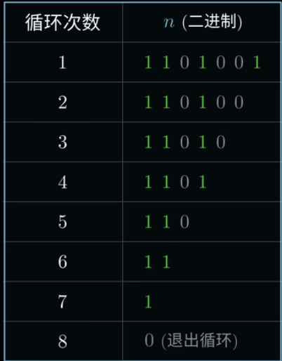
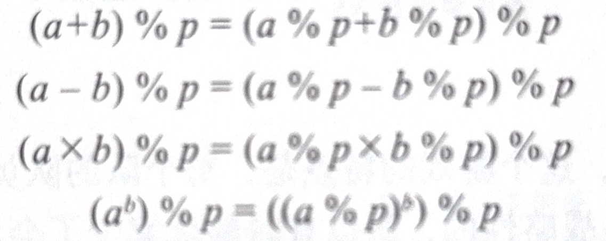

本文是按照我在图书馆随便翻来的一本书为指导展开的，感觉还行，就用了😋
大抵是本人拿来学学数据结构/算法的，也不知道学咋样😋
第1章：利用快速幂提高幂运算速率
1.1:基础快速幂算法
int quickpow(int n,int i){
int ans = 1,res = n;
while(i>0){
if(i%2==1){
ans*=res;
}
i/=2;
res=res*res;
}
return ans;
}
看过一个视频，它解释这段代码的观点采取了二进制，笔者认为值得贴出来学习

Explain：这是计算 \(7^ {105}\)对指数的处理
因此，对源代码我们可以进行以下处理：
int quickpow(int n,int i){
int ans = 1,res = n;
while(i>0){
if(i % 1){//修改1
ans*=res;
}
i = i >> 1;//修改2
res=res*res;
}
return ans;
}
时间复杂度：O(\(\log_{2}{n}\))
查缺补漏：二进制
称它为二进制数是因为它只有0和1两个数字，用数学语言来说就是基数为2。依次类推，基数为3的是三进制计数、……、基数为10的就是十进制计数。
位权： 可以借助于十进制计数来理解位权，在十进制计数中，计数单位分别为个位、十位、百位……，其中个位数表示数值1、十位数表示数值10、百位数表示数值100…每个位数表示的数值叫位权。位权通过计算基数的n-1次幂就可以得到，这里的n是指位数所在数字中的位置
E.g.：二进制数00111从低位到高位的位权依次是2的0次幂1、2的1次幂2、2的2次幂4···
按位与(&)：
按位与（bitwise AND） 操作是一种基于二进制的运算，会逐位比较两个数的二进制位，并根据以下规则生成一个新值：
如果两个位都为 1，结果为 1；
如果任意一位为 0，结果为 0。
例子： 假设我们有两个数字：
-
6 的二进制表示是 0110
-
3 的二进制表示是 0011 6 & 3 的按位与结果为：
0110 （6）
0011 （3）
0010 （结果 = 2）
通常作用
1. 按位与可以用于清除特定位，即将某些位强制设置为 0，而不影响其他位。
例如：
x = 1011 1011 (即十进制的187)
mask = 1111 0000 (掩码，将低 4 位清零)
结果 = 1011 0000 (即十进制的176)
(2) 检查特定位是否为 1 :
例如，检查某数的第三位是否为 1：
x = 0110 (即 6)
mask = 0100 (掩码，检查第三位)
结果 = 0100 (非零，表示第三位为 1)
快速幂取模
一个折腾了笔者好久的算法，书本看了好几遍没看懂，所以到处寻找是不是由于二进制没学透，后来发现是数学没学好😭😭😭😭😭
一定要学好数学
所以，快速幂取模算法只需要在快速幂算法的基础上在特定地方加取模就OK
int modexp(int a,int b,int n){
int ans = 1,res = a;
while(b>0){
if(i%2==1){//当然可以用i & 1
ans=(ans*res)%n;
}
i/=2;//当然也可以用i >> 2
res=(res*res)%n;
}
return ans;
}
沟槽的玩意，看了我半天，怎么会有书把原理写在下一页
时间复杂度：O( \(\log_2 n\) )
附一张基本模运算的表
